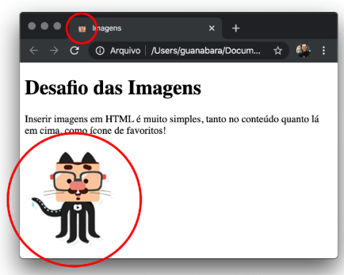
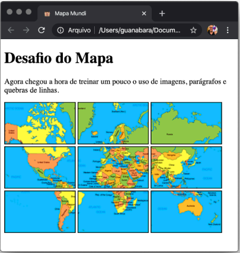

Trabalhando com Listas.
As listas ordenadas seguem uma ordem, "ol".
Ou podem ser sem ordem definida, "ul"
Lista Ordenada
Alfabeto Grego:
Receita de bolo:
Crie agora uma página que tenha duas imagens:
uma no conteúdo da página
e um ícone de favoritos.
exemplo:
Meu exemplo:inserindo uma imagem:
Dá uma olhadinha na imagem a seguir:
É um mapa montado por nove imagens diferentes. É uma ótima maneira de treinar
se você entendeu a diferença entre parágrafos e quebras de linha, além de saber
inserir imagens.
IMPORTANTE: As imagens estão disponíveis na pasta desse desafio, lá no meu
repositório do GitHub.
Eu também dei uma embaralhada nas coisas, colocando as
imagens com nomes diferentes e você vai ter que brincar um pouco de quebracabeças 😉
E aí? Consegue resolver esse desafio? Tenho certeza de que consegue! Abra seu
Visual Studio Code, seu Google Chrome e mãos à obra!
Meu exemplo:


Vamos juntar agora os conceitos de listas e emojis. Você vai pegar 6 categorias (carinhas, mãos, animais, esportes, comidas e objetos) e vai fazer uma lista com seus três emojis favoritos em cada assunto.
Referência: Prof. Gustavo Guanabara